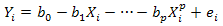
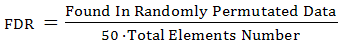
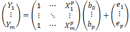
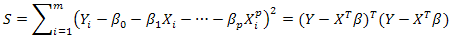
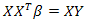
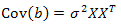
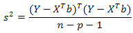
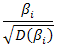
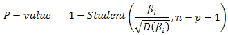
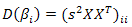

Polynomial regression analysis.
Regression analysis is performed for each row in experimental data independently.
Consider:
- Y = {Y1...Ym} — gene expression values.
- X = {X1...Xm} — corresponding time poins.
Value Yi is measured at the time point Xi.
Analysis constructs polynomial regression:

For each estimated regression coefficient, the P-value will be calculated, but P-value
threshold will be applied only on the last coefficient (with largest power).
Parameters:
- Experiment - experimental data for analysis.
- Table - a table data collection stored in the BioUML repository.
-
Columns - the columns from the table which should be taken into account for futher analysis.
Note that in order to ensure correct analysis you should specify the corresponding time point for each column.
Time points also should ascend!
- Regression power - the positive value representing power to construct regression.
- P-value threshold - thresold for P-value (only elements with lower
P-value will be included in the result table).
- Outline boundaries - lower and upper boundaries for values from the input table. Outliers will be ignored.
-
Calculate FDR - the test method for calculation of False Discovery Rate (FDR) -
an average rate of mistakenly builded regressions with the given P-value threshold. It randomly permutates the data 50 times and applies
regression analysis to each randomized test. FDR is calculated according to the formula:

-
Output table - the path in BioUML repository where the result table will be stored.
If a table with the specified path already exists it will be replaced.
The table will contain the sum of square errors, coefficients with their scores (log10(P-value))
and graphics for original and approximated profiles.
Details
In matrix form building regression could be described as:

where e is distributed like N(0,σ2).
Let us consider:

We will find βi ∀i out of condition S → min, i.e. we should solve the equation system:

We also need to estimate the dispersion of the coefficients, which we can derive from the equation:

Approximation for σ2 is:

To test the hypothesis H0: {bi=0}, we shall use the statistic:

In the case that H0 is true this statistic is distributed like Student's random
value with n − p − 1 degrees of freedom. So we estimate P-value:

where:
